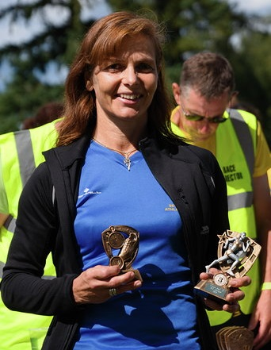
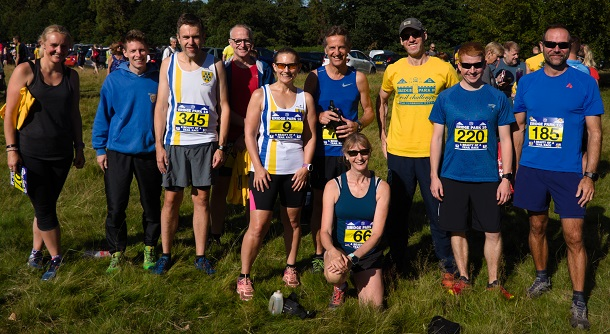

Heather Fitzmaurice was third and first W45 at the Eridge 10 on 1st September.
While the race preferences of Sevenoaks AC runners were split between this race and the Weald 10k, the lure of beer and cake afterwards was the determining factor for some of our athletes.
John Witton led the fourteen SAC runners home in a brilliant 10th place, closely followed by Ed Saunders in 15th and Andrew Hutchinson in 16th.
The SAC results were as follows:
| 10 | 01:14:08 | John Witton | Sevenoaks Ac | M | Male Vet 40 | 346 | 10 | 4 |
| 15 | 01:17:35 | Edmund Saunders | Sevenoaks Ac | M | Senior Male | 361 | 15 | 8 |
| 16 | 01:17:46 | Andrew Hutchinson | Sevenoaks Ac | M | Senior Male | 157 | 16 | 9 |
| 46 | 01:24:45 | Heather Fitzmaurice | Sevenoaks Ac | F | Female Vet 45 | 93 | 3 | 1 |
| 48 | 01:26:03 | Chris Desmond | Sevenoaks Ac | M | Male Vet 50 | 70 | 44 | 6 |
| 53 | 01:27:06 | Daniel Witt | Sevenoaks Ac | M | Male Vet 40 | 345 | 49 | 24 |
| 80 | 01:31:28 | James Nash | Sevenoaks Ac | M | Senior Male | 220 | 71 | 24 |
| 87 | 01:32:48 | Graham Dwyer | Sevenoaks Ac | M | Male Vet 40 | 78 | 77 | 39 |
| 120 | 01:36:29 | Sean Leith | Sevenoaks Ac | M | Male Vet 40 | 185 | 104 | 46 |
| 127 | 01:37:13 | Pauline Dalton | Sevenoaks Ac | F | Female Vet 55 | 66 | 17 | 2 |
| 201 | 01:47:06 | Paul Smith | Sevenoaks Ac | M | Male Vet 50 | 293 | 166 | 42 |
| 316 | 02:13:04 | Jenny Austin | Sevenoaks Ac | F | Female Vet 35 | 9 | 87 | 33 |
| 319 | 02:13:45 | Clair Thornton | F | Female Vet 35 | 307 | 90 | 35 | |
| 320 | 02:13:46 | Mike Allen | M | Male Vet 50 | 4 | 230 | 65 |

The full results are here.